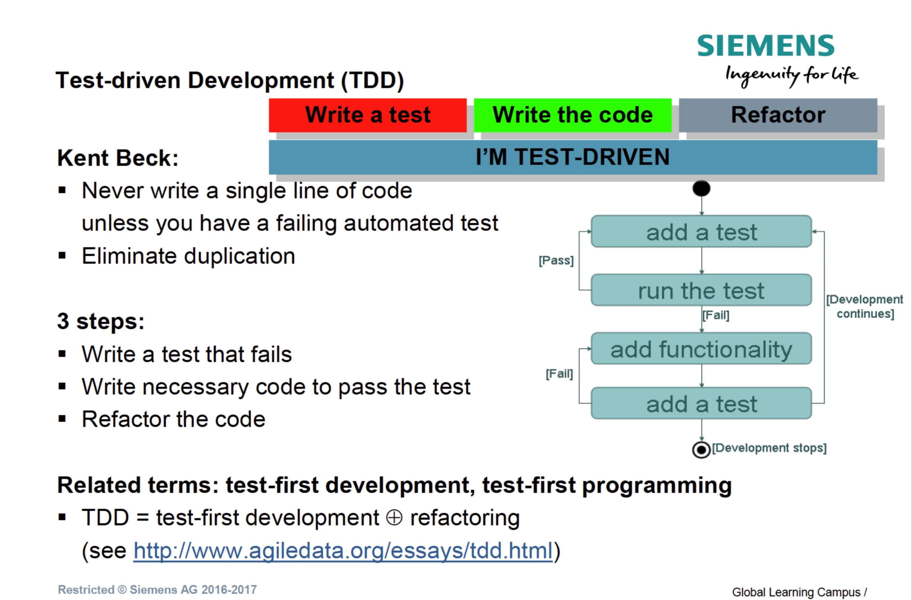
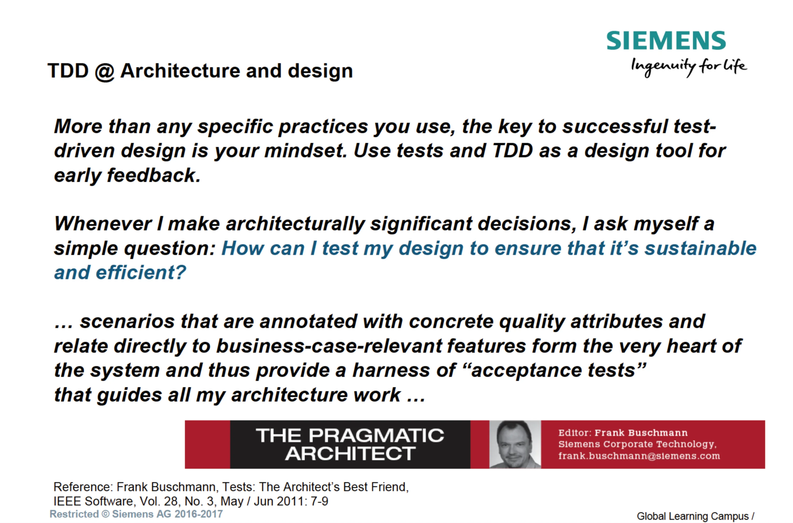

Test-Driven Development (TDD)
Test-Driven Development (TDD) is a development methodology formulated by Kent Beck as part of the agile practices of Extreme Programming (XP) in the second half of the 1990s. TDD is based on two fundamental rules: do not write a single line of production code until a failing automated test exists, and regularly refactor the code to remove duplication and maintain high internal quality.
From the perspective of software architecture and testing, TDD represents a fundamental shift in thinking. Although it has the word "testing" in its name, in practice it is primarily an analysis and design technique (Test-Driven Design). By requiring developers to write a test before the implementation itself, TDD enforces clarification of requirements and interfaces before programming begins. From an architectural perspective, TDD naturally eliminates tight coupling, promotes high cohesion, modularity, and the internal testability of the system (Design for Testability). Within the test strategy, unit tests created through TDD form the fundamental, fastest, and least expensive layer of the testing pyramid.


#2. Definitions and Basic Concepts
#Test-Driven Development (TDD)
- Definition: A development process in which automated unit tests are written before the production code itself in short iterations. Development is driven by the requirement to make the failing test pass.
- Significance in architecture: It enforces the decomposition of the system into small, loosely coupled, and independent components. The architecture emerges organically and is protected by a safety net against code degeneration and technical debt.
- Significance in testing: It ensures high test coverage of the code from the very beginning and provides developers with immediate feedback on detected regression defects.
- Typical mistake / misunderstanding: Understanding TDD solely as a QA verification technique, rather than as a tool for architectural design and behavior specification.
- Example from an industrial/embedded environment: When developing an embedded module for controlling a motor unit (according to normative procedures such as Valeo SWE.4), the developer first defines a test driver that checks the limits of sensor input values, and only then implements the algorithmic processing block.
#The Red-Green-Refactor Cycle
- Definition: The fundamental micro-iterative rhythm of TDD, consisting of three steps: Red (writing the simplest test that fails or does not even compile), Green (writing the minimum production code necessary to pass the test, even at the cost of temporarily inelegant solutions), and Refactor (removing duplication and cleaning up both the production and test code while maintaining a green bar).
- Significance in architecture: The Refactor step enables continuous improvement of the architecture without fear of breaking existing functionality.
- Significance in testing: The Red step verifies that the test actually fails for the right reason and is capable of detecting a defect.
- Typical mistake / misunderstanding: Limiting the cycle to the Red-Green steps while completely omitting the Refactor phase, which leads to unmaintainable "dirty" code full of duplication.
#Design for Testability (DfT)
- Definition: An architectural quality and a set of design tactics that enable easy, efficient, and controlled testing of a system through control points and observation points.
- Significance in architecture: It includes the application of SOLID principles, Dependency Injection, interfaces, modularity, and the minimization of cyclic dependencies.
- Significance in testing: It increases the controllability and observability of the internal states of components, making tests less expensive and faster.
- Typical mistake / misunderstanding: The view that testability is only a subsequent concern for testers after development is complete, rather than a primary non-functional requirement of the architecture.
#Test Doubles (Mocks, Stubs, Spies, Fakes)
- Definition: Substitute objects or components created for testing purposes that simulate or verify the behavior of the real dependencies of the unit under test (System/Code Under Test – SUT/CUT).
- Significance in architecture: They enable the isolation of architectural layers (for example, separating domain logic from the database or hardware).
- Significance in testing: They isolate the unit under test, enable the simulation of error conditions (fault injection), and speed up test execution by eliminating I/O operations.
- Typical mistake / misunderstanding: Confusing a Mock with a Stub or excessive use of mocks (over-mocking), which couples the test to the internal implementation instead of observable behavior.
#Sociable vs. Solitary Tests (Classic vs. Mockist TDD)
- Definition: Solitary Tests (Mockist/London style) isolate the class under test from all dependencies using mocks. Sociable Tests (Classic/Detroit style) test a group of real collaborating classes together and use test doubles only for external I/O or slow dependencies.
- Significance in architecture: Classic TDD allows free refactoring of a module's internal classes without having to modify the tests; Mockist TDD enforces a strict definition of the interfaces between every class.
- Significance in testing: Classic TDD provides greater confidence in component collaboration; Mockist TDD offers more precise fault localization within an isolated class.
- Typical mistake / misunderstanding: Dogmatically requiring 100% Solitary tests with mocking of every internal helper class.
#Executable Specifications (BDD Bridge)
- Definition: A format for writing unit and acceptance tests as living executable documentation describing the required behavior of the system (using domain language or Given-When-Then / Should-When conventions).
- Significance in architecture: It connects business requirements directly to the architecture and low-level interfaces.
- Significance in testing: It improves test readability and shields test scenarios from changes to the names of internal methods.
- Typical mistake / misunderstanding: Naming tests after the methods being tested (for example,
testCalculate()) instead of describing the expected behavior (for example,shouldCalculateTaxWhenCountryIsEU()).
#3. Common Mistakes and Anti-Patterns
+-------------------------------------------------------------------------+
| ARCHITECTURAL ANTI-PATTERNS |
+-------------------------------------------------------------------------+
| Over-Mocking (Tight test-to-code coupling) --> Fragile Tests |
| No Upfront Design (Lack of vision) --> Spaghetti Architecture |
| I/O in Unit Tests --> Slow Tests & Flakiness |
+-------------------------------------------------------------------------+
#1. Architectural Mistakes
- Over-Mocking and testing internal structure instead of behavior: Creating mocks for all internal classes causes tests to reflect the current code structure instead of observable input/output. Any architectural refactoring then breaks dozens of tests, even though the external behavior has remained unchanged (creating what are known as Fragile Tests).
- Lack of an architectural vision ("No Upfront Design alibi"): Relying on TDD alone to create the complete system architecture without any initial concept. While the design of small components emerges, in large and safety-critical systems a missing initial architectural framework leads to local optical optima and architectural chaos.
#2. Requirements Mistakes
- A blind spot for non-functional requirements (NFRs): By its nature, TDD tests functional increments through unit tests. Security defects, concurrent access (concurrency), real-time timing, performance, and memory demands cannot be reliably anticipated and designed for using unit-level TDD tests alone.
- Lack of acceptance criteria from a domain perspective: Developers write unit tests focused on "happy day" scenarios from their own technical perspective, while missing the actual behavior and boundary conditions required by the customer.
#3. Test Strategy Mistakes
- "Test-Last Alibi": The claim that tests written after the code is complete have the same value as TDD. Tests written afterwards suffer from the developer testing what they actually implemented (with confirmation bias), rather than what should have been designed, and the code often requires drastic refactoring because of poor internal testability.
- Replacing higher levels of testing with TDD unit tests alone: The assumption that 100% unit test coverage from TDD eliminates the need for integration, system, or acceptance tests. Verification of real hardware, databases, and interfaces between enterprises is missing.
#4. Automation Mistakes
- Slow and dependent unit tests (Slow Tests): Bringing I/O operations, databases, the network, or the file system directly into TDD unit tests. If a unit test suite takes longer than a few seconds or minutes, developers stop running the Red-Green-Refactor cycle continuously.
- Testing trivial code: Writing TDD tests for simple getters, setters, or purely declarative properties without logic. This increases maintenance costs without adding value in defect detection.
#5. Mistakes in Interpreting Testability
- Confusing Code Coverage with test quality: Monitoring only the percentage of line coverage instead of focusing on testing risks and boundary conditions. 100% coverage does not guarantee correct design or the absence of logical errors.
#6. Communication Mistakes
- Isolation of developers from testers and architects: Developers perceive TDD as their private activity and do not share executable specifications with test architects or business analysts. The opportunity to create unified living documentation of the system is therefore lost.
#4. Examination Questions
#1. Basic Questions
- Question: Explain the three phases of the Red-Green-Refactor cycle in TDD and the main purpose of the Refactor phase.
- A correct answer should include: A definition of the Red step (a failing test), Green (the minimum code needed to pass), and Refactor (removing duplication without changing behavior). Emphasize that Refactor applies to both production and test code.
- Question: Why is TDD said to be primarily a design technique rather than a verification technique?
- A correct answer should include: An explanation that the requirement to write a test first necessarily shapes the API, interfaces, and dependencies of the unit under test. It enforces low coupling and high cohesion before implementation.
#2. Intermediate Questions
- Question: What is the difference between Sociable Tests (Detroit style) and Solitary Tests (London/Mockist style) in the context of TDD, and how do they affect architectural refactoring?
- A correct answer should include: The difference in the use of mocks versus real objects. An explanation that Solitary tests can hinder refactoring of internal classes because of tight coupling to mock interfaces, whereas Sociable tests verify the observable behavior of a cluster of classes.
- Question: How does TDD support the architectural principle of Design for Testability (DfT), and which specific design tactics does it enforce?
- A correct answer should include: Enforcement of Dependency Injection, separation of state and I/O operations, introduction of control and observation points, and elimination of cyclic dependencies.
#3. Advanced Questions
- Question: Describe the relationship and transition between Acceptance Test-Driven Development (ATDD / BDD) at the system level and TDD at the unit test level.
- A correct answer should include: The Top-down (Outside-In) approach: Acceptance tests define the broad boundaries of a user story (the outer loop), from which low-level requirements for TDD unit tests emerge (the inner loop).
- Question: What are the limitations of TDD for reactive, event-driven, or multi-threaded systems in industrial automation or automotive applications?
- A correct answer should include: The difficulty of simulating asynchronous timing, race conditions, and hardware interrupts using pure unit tests. The need to combine TDD with HW-in-the-loop (HIL) and environment models.
#4. Practical Experience Questions
- Question: How should TDD be introduced into a large legacy system (brownfield) that was not originally designed with testability in mind?
- A correct answer should include: Introducing acceptance/characterization tests around the area being modified (a safety net), carefully creating seams and refactoring using tactics from Michael Feathers' book, and subsequently applying TDD only to new code.
#5. Trade-Off Decision Questions
- Question: What is the trade-off between development speed in the early phase of a project and investment in TDD from the perspective of the overall software life cycle?
- A correct answer should include: TDD increases initial code development time (by approximately 15–30% because of the creation of tests and mocks), but dramatically reduces production defects and maintenance/regression costs over time.
#5. Model Examination Answer
Oral examination scenario: "Sir / Madam, explain the significance of Test-Driven Development for software architecture and test strategy. Explain its principles, benefits, limitations, and architectural trade-offs."
(Speaking time: approximately 4–5 minutes)
[Definition and Fundamental Principles]
"Test-Driven Development is a development methodology based on extremely short iterations, in which we first write a failing automated unit test and only then the minimum production code necessary to satisfy it. The entire process is governed by the well-known Red-Green-Refactor cycle. In the Red step, we write a test specifying a new feature; in the Green step, we achieve a green bar by the fastest possible route; and in the Refactor step, we remove duplication and architectural smells from the code and tests without changing the external behavior.
[Significance for Software Architecture]
From a software architect's perspective, it is essential to understand that TDD is not primarily a verification tool for QA, but a software design method (Test-Driven Design). You cannot write a unit test for a component without first thinking through its public interface, responsibilities, and dependencies. TDD naturally pushes developers to follow SOLID principles, especially Dependency Inversion, and to apply the Dependency Injection pattern consistently. The result is a highly modular architecture with low coupling and high cohesion that directly fulfills the requirements for Design for Testability (DfT).
[Significance for Test Strategy]
From a testing architecture perspective, TDD forms the base of the testing pyramid. It generates a suite of fast, deterministic, and low-cost unit tests that serve as a continuously executed regression safety net in the CI/CD pipeline. These tests also function as living executable documentation – the test code makes it immediately clear how the given API should be used.
[Practical Example]
Let us consider an example from the development of a control module in automotive software (according to ISO 26262 / Valeo SWE.4). If we wrote the code without TDD, the developer would probably hardcode calls directly to a hardware driver or global state. When using TDD, the developer is forced to create an abstraction of the sensor interface and pass it through the constructor. In the Red step, they write a test simulating sensor failure using a Test Double (for example, a Stub/Mock). This verifies that the code correctly transitions to a Safe State. Only then do they implement the control logic itself.
[Trade-Offs and Limitations]
Like every architectural approach, TDD has its trade-offs.
- Initial time investment: Development in the first phase takes 15–30% longer, which requires team discipline and management support.
- The Over-Mocking anti-pattern: If developers succumb to dogmatic mocking of every internal class (London style), they create tests that are extremely sensitive to interface refactoring. Here, I recommend preferring Classic/Sociable TDD, in which we test the behavior of entire small clusters of collaborating classes through their public interfaces.
- Coverage limitations: TDD does not cover non-functional requirements such as performance, reliability during a power failure, or real-time concurrency. TDD unit tests must therefore be supplemented by Risk-Based Testing at higher layers – at the integration and system levels.
[Concluding Summary]
TDD is an exceptionally powerful tool for building sustainable internal software quality. An architect should not view TDD as a panacea, but as a fundamental engineering discipline that brings rapid feedback, modularity, and confidence when refactoring the entire system to the development team."
#6. Short Version for Quick Review (Cheat Sheet)
#5 Main Points
- TDD is an analysis and design technique (Test-Driven Design), not merely code verification.
- The Red-Green-Refactor micro-cycle: Write a failing test \(\rightarrow\) make it work with the simplest code \(\rightarrow\) remove duplication and clean up the code.
- Enforcing testability (Design for Testability): TDD naturally eliminates tight coupling and cyclic dependencies, and supports Dependency Injection.
- Living documentation and a regression safety net: Tests created in TDD serve as a precise specification of API usage and an immediate indicator of regression defects.
- The need to combine it with higher levels of testing: TDD guarantees the correctness of units, but does not cover non-functional requirements (NFRs) or system integration.
#5 Key Concepts
- Red-Green-Refactor: The fundamental rhythm of TDD.
- Design for Testability (DfT): The architectural ability of a system to be tested easily and efficiently.
- Test Double (Mock / Stub / Spy / Fake): A replacement for a dependency to isolate the SUT.
- Sociable vs. Solitary Tests: Testing the behavior of a group of classes versus strict isolation of each class using mocks.
- Executable Specification: A test written as a readable specification of domain behavior.
#5 Examination Questions
- What is the main difference between testing in TDD and the traditional "Test-Last" approach?
- How does the Refactor phase prevent architectural debt?
- What danger does the Over-Mocking anti-pattern pose to test maintainability?
- What is the relationship between TDD unit tests and BDD acceptance tests in Top-Down development?
- Why can TDD not fully replace testing of non-functional requirements (NFRs)?
#3 Most Common Mistakes
- Omitting the Refactor phase (both code and tests deteriorate into a confusing tangle).
- Testing implementation details instead of observable behavior (leads to fragile tests that are difficult to maintain).
- Bringing the network/database into TDD unit tests (slows execution and destroys the feedback cycle).
#1 Sentence for the Examination
"TDD is an engineering design discipline that uses the Red-Green-Refactor cycle to transform requirements into an executable specification and enforces a modular, loosely coupled architecture with high internal testability."
#7. Learning Outcome (Impact According to LOPO)
In accordance with the requirements of the Learning and Practice Outcomes (LOPO) document, the outcome demonstrates and develops the following competencies:
- Design for Testability (DfT) at the architectural level: Understanding how TDD implements tactics for improving the controllability and observability of architectural components in practice.
- A structured view of testing layers (Testing Pyramid / Test Trophy): The ability to justify the role of TDD unit tests in the lowest layer of the pyramid and explain their relationship to integration and NFR tests that verify the architecture as a whole.
- Internal Quality Management: The ability to use TDD as a preventive mechanism against code degeneration and increasing technical debt.
- Risk-Based Testing: The ability to identify architectural and product risks and determine where TDD should be applied most thoroughly in combination with systematic test design.
#8. Summary in a Single Table
| Area | What Is Important | Relationship to Architecture | Relationship to Testing | Typical Examination Question |
|---|---|---|---|---|
| Methodology and Cycle | The Red-Green-Refactor cycle; writing the test strictly before the production code. | Gives the architect and developers a safe space for continuous refactoring without the risk of regressions. | Guarantees 100% test functionality (verifying failure in the Red step) and high coverage. | What benefit does the Refactor phase in TDD bring to architectural maintainability? |
| Design and Testability (DfT) | TDD as a design tool (Test-Driven Design); application of SOLID and Dependency Injection. | Enforces low coupling, high cohesion, and clearly defined component interfaces. | Increases the controllability and observability of the SUT. | How does TDD enforce application of the Dependency Inversion principle in architecture? |
| Isolation and Test Doubles | The difference between Mock/Stub; the choice between Sociable and Solitary tests. | Determines the degree of coupling in the architecture and the dependence of tests on internal interfaces. | Incorrect use leading to Over-Mocking creates Fragile Tests. | When is it appropriate to use real collaborating objects (Sociable), and when should Test Doubles (Solitary) be used? |
| Documentation and Requirements | Tests as executable specifications (Executable Specifications) and the connection to BDD. | Translates domain and business requirements directly into the architecture and API interfaces. | Creates readable, always up-to-date executable documentation of code behavior. | How do executable specifications replace static documentation that becomes outdated? |
| Strategy and Limitations | TDD does not cover non-functional requirements (NFRs); combination with Test Pyramid / RBT is necessary. | The need to design the overall architecture, including NFRs (security, concurrency, performance), beyond the scope of TDD. | TDD forms the fundamental unit-level layer; higher risks require integration and E2E tests. | Why are TDD unit tests insufficient to verify the overall quality and safety of a system? |